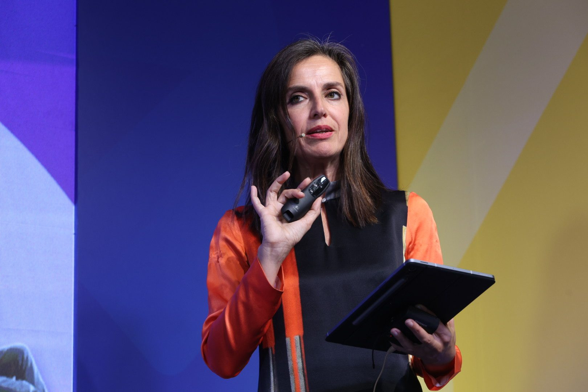
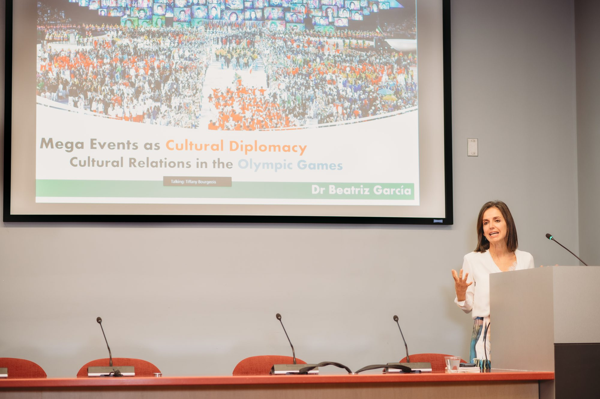
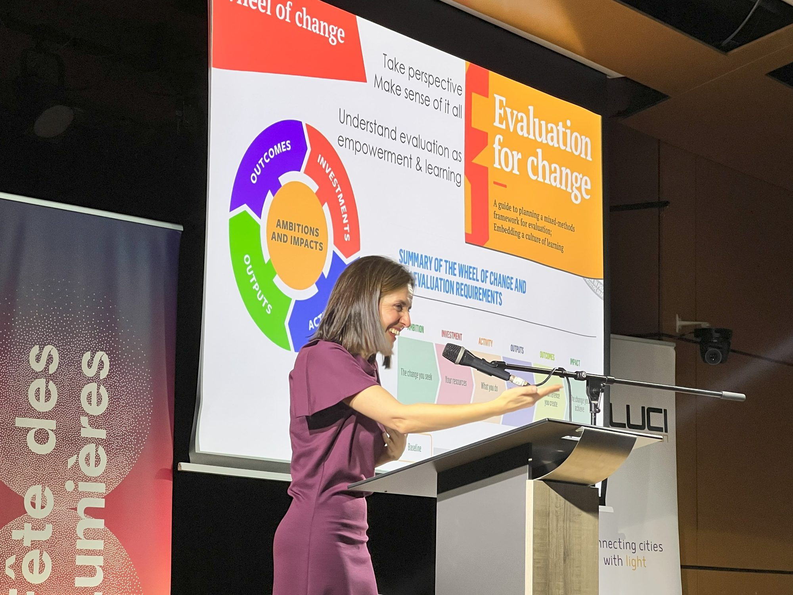
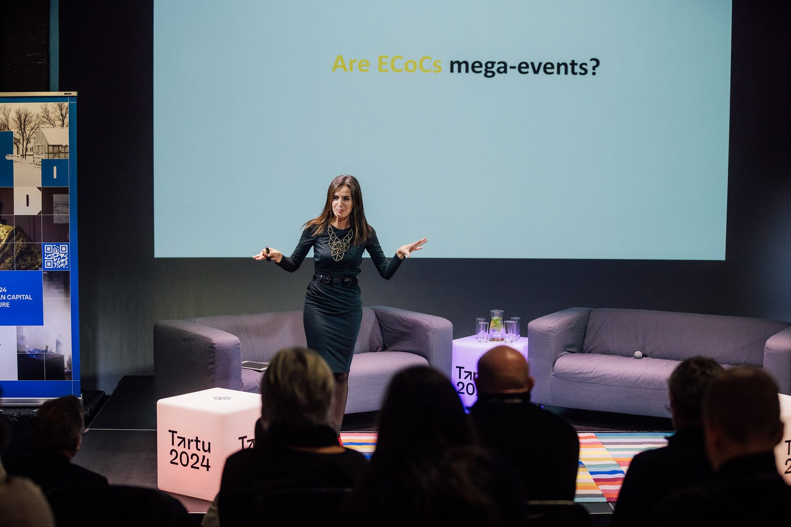
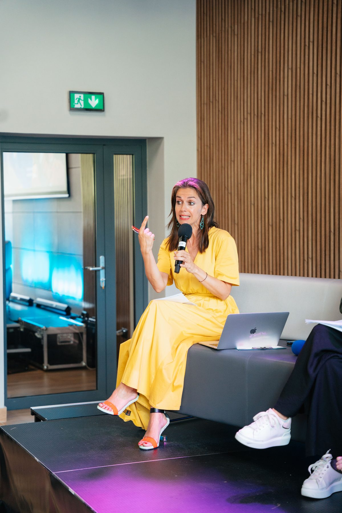

The Counting Trap
Why the most valuable things culture does for a city are the hardest to count, and how to capture them anyway.
For city leaders, funders, evaluators and destination bodies
Speaking
More than 300 invited talks in 45 countries, on what culture does for the cities that host the world's biggest events.
Dr Beatriz García
Founder, Beatriz García Research & Advisory — mega events, cities and culture
Member, Culture and Olympic Heritage Commission, International Olympic Committee
Senior Research Fellow, Mega Events & Cultural Policy, University of Liverpool
Each can be a keynote, a keynote plus workshop, or a masterclass
Why the most valuable things culture does for a city are the hardest to count, and how to capture them anyway.
For city leaders, funders, evaluators and destination bodies
What the Olympic Games and the Capitals of Culture still give cities, and what they must stop doing to deserve them.
For organising committees, host cities, sports business and governments
Can joy make a city more tolerant? Collective celebration as civic infrastructure, and how to design for it.
For festivals, placemaking and real estate, ideas festivals
Culture as a sector to fund, or the ground everything else in a city grows from.
For ministries, mayors, urban developers and strategy teams
European Parliament · European Commission · Council of Europe · Hungarian Presidency of the Council of the EU · UNESCO Creative Cities Network · Mondiacult 2025 · UCLG Culture Summit · IFACCA World Summit on Arts and Culture · Europe House Belgrade
International Olympic Committee · International Olympic Academy, Ancient Olympia · Expo 2020 Dubai · SportAccord · Taipei World Design Capital · National Olympic Academies
Tartu 2024 · Kaunas 2022 · Aarhus 2017 · Culture Next · ECoC Family
Salzburg Global Seminar · Victoria and Albert Museum · Royal Society of Arts · British Academy · Edinburgh International Culture Summit · Creative Prague · LUCI, Fête des Lumières · Forum d'Avignon · Culture Action Europe · Eurocities · European Broadcasting Union · VisitScotland National Events Conference
Ohio State · Oxford · Chicago · Toronto · São Paulo · Lausanne





In English, Spanish, Catalan or French.
Tell us the date, city, audience and format. Fees and availability on request. Speaker bureaus welcome.
Past talks archive